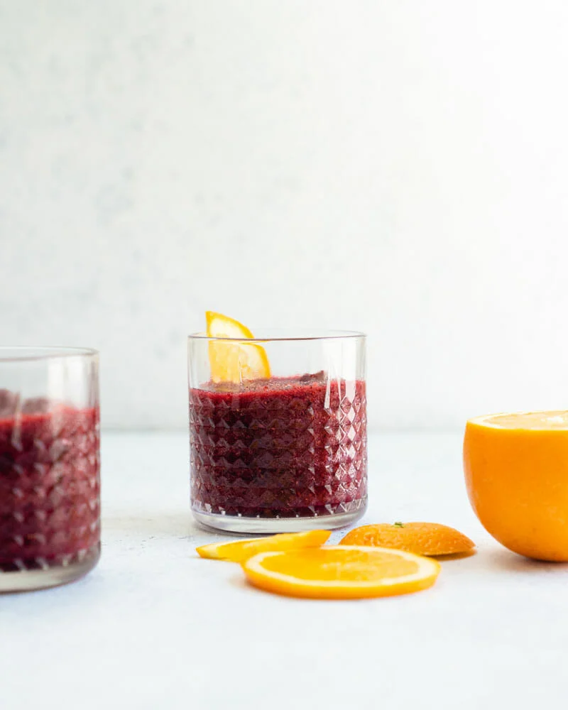

Freeze Sangria

Description
It’s icy and refreshing, citrusy and red-wine forward:
really, an ideal summer drink. Here’s how to make it!
Ingredients
- 12 ounces (3 large or 4 to 6 small) clementine oranges, frozen
- 10 ounces frozen mixed berries
- 2 tablespoons honey
- 1 orange, cut into slices for garnish
Steps
- The night before serving: Peel and section the clementine oranges and pop them in the freezer.
- The day of serving: Blend together the frozen clementine oranges with the berries, red wine, and honey, stopping to scrape down the sides as necessary.
- Serve in glasses garnished with orange slices. Best served immediately.